After reading the design information from its client in EDIF format [55], the server performs the placement of components basically in three steps:
(cell NMOS (userData cellFunction NMOS) (view maskLayout Physical (interface (declare inout port (list source drain)) (portImplementation drain (figureGroup NDIFF ...) ...) ...) (contents (figureGroup POLY ...) ...)))The
userData field defines the type of the cell. The cell type is defined for use in the Agents system, it is not a type defined in EDIF, thus an userData command is used. The mask layout view is divided into two parts, the interface and the view's contents. In the interface command, the cell's input and output terminals are declared and their implementation described. In the contents command, the whole cell is described including the terminals. This data structure is maintained after the EDIF commands are interpreted by the Placer server.The main cell, the one containing the netlist information, looks like:
(cell mainCell
(userData cellFunction main)
(view symbolic Symbolical
(contents
(instance PMOS Physical fet1)
(instance stdNode Physical node0)
(instance VSS Physical VSS)
(mustJoin (qualify node0 node)
(qualify fet7 source) (qualify bip2 emiter)
(qualify VDD pad)
)
(mustJoin (qualify node1 node)
(qualify VSS pad)
(qualify fet1 drain) (qualify fet4 drain)
(qualify bip1 colector)
)
...
)))
Again, an userData command defines the type of the cell and there can be only one main cell per design. Only the content field of the symbolic view is used. It holds two commands: the instance command, which declares a cell as part of the layout and gives it a name, and the mustJoin command, which declares what cells are connected and the terminals used in the connection.Apart from the main cell there are five kinds of cells:
* Pad cells - They describe the ports used by the design. Ports are the terminals used by the design as input/output ports. They come already placed.
* MOSFET cells - They describe CMOS field effect transistors. These transistors will be placed as an array of components.
* Bipolar cells - They describe bipolar transistors (PNP or NPN).
* General cells - They describe any kind of cell.
* ElectricNode cells - They describe all the wiring for a given node. They usually would come empty and the Router agent server would place all the necessary wires to route the particular node in them. However they can come prerouted.
Pad cells come already placed because their placement is more closely related to the global strategy of the leaf cell placement by a silicon compiler (or other type of client), than to the internal arrangements of the cell design. Having used an object oriented approach, the placer should not take part in activities outside its boundaries, such as the global silicon compiler's strategies for leaf cell placement and routing.
Bipolar cells were added having in mind to support BICMOS (Bipolar plus CMOS transistors) digital designs. General cells are used to include any kind of cells. They can be used to include small analogue cells, resistors, capacitors, unusually big or shaped transistors. They give greater flexibility to the placement, but, because of their possibly unusual shape, they can reduce the quality of the final placement. They should be used with care.
The server places components' cells over a design containing the pad cells and any preplaced cells. The server can accept partially placed or wired layouts for completion. Figure 6.1 shows a possible input design and the three types of cells to be placed: CMOS transistors, bipolar transistors and general cells (It is considered that all ElectricNode cells are empty).
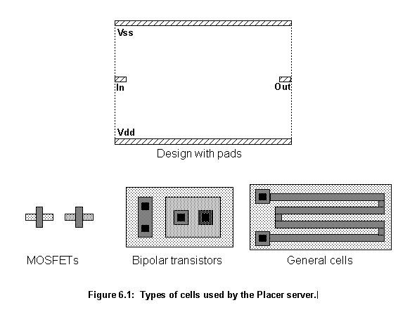
There are three kinds of agent objects for placement: the Cont agent object controls all the operations; the Abutted agent object first builds columns of related transistors and subsequently tries to unite with other Abutted agents to form groups, and the Eval agent object uses the genetic algorithm (GA) to find a good placement for the groups.
The Cont agent coordinates all the actions. It receives the new circuit, after it has been interpreted from EDIF as a list. It separates the NMOS, PMOS and bipolar transistors and general cells in different lists and creates the first Abutted agent.
An Abutted agent has two behaviours. When it is created it performs its first behaviour: it goes to the lists of available cells, in the Cont agent, and grabs the first cell it can obtain in the following order: NMOS, PMOS, bipolar or general cells. Then it tries to create the biggest possible column following the rules:
Figure 6.2 shows the moment when a new Abutted agent is created. There are no more MOSFETs available (PMOS and NMOS lists are empty). The agent is then attempting to grab a bipolar transistor from the bipolar list. At least one more agent will be created to grab the only element of the general list.
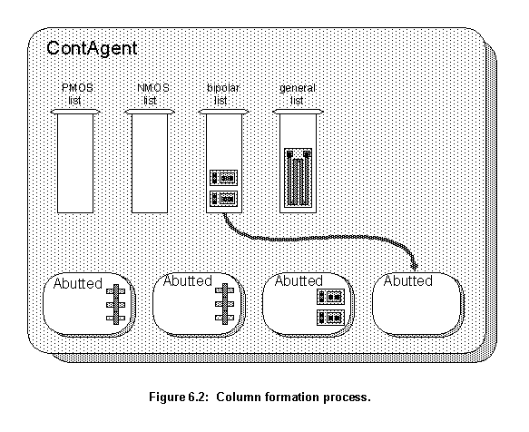
The group formation process is performed in cycles controlled by the Cont agent. In this process only Abutted agents holding columns of MOSFETs are considered. In each cycle, the Cont agent goes through the list of Abutted agents, exposes each agent to the others and asks the other agents how well they connect to this agent. Each agent then creates a report showing its situation relating to the exposed agent. This report states if a match is possible, how good this match is and details how it should be implemented. At the end of a cycle, the two agents that have the best connections between each other are joined. These cycles continue until no agents can be joined or the quality of the possible connections is too poor.
Figure 6.3 shows the report and joining stages in more detail. During this particular report stage, agent Abutted #5 was exposed and agent Abutted #8 created a report about their match. They have two possible connections through nodes 1 and 2. The joining report has two parts: a list, containing the line's connection order, and the sides of the connection. The list contains pairs of connecting lines. In the example from figure 6.3, the report states that, in a connection between the two agents, two lines will be joined: line 0 of Abutted #8 will connect to line 1 of Abutted #5 and line 1 of Abutted #8 will connect to line 0 of Abutted #5. Also it states that the drain side of Abutted #8 should join the drain side of Abutted #5. Source side means the right side, and drain side means the left side.
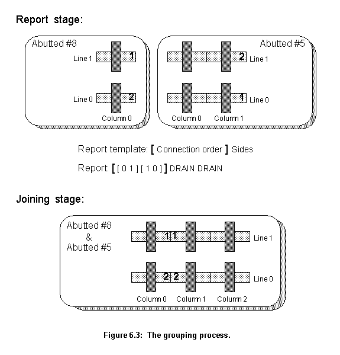
In this particular case, the report was the best one and the two Abutted agents are joined. As the report states that the two agents should be joined by their left side, and because any two groups of MOSFETs only can be joined left to right, the group of MOSFETs belonging to Abutted #5 will be mirrored in relation to the Y axis. After this transformation, Abutted #5 connection side becomes right and the connection is possible. To connect each line properly the program uses the connection description list from the report.
After the grouping of cells has finished, the Cont agent contains a list of Abutted agents holding groups of cells. It then takes these cells from the agents and puts them in a list. The Abutted agents are then destroyed. The next step is to place the groups of cells in the empty design (Top of figure 6.1).
The inputs for the Eval agent are an empty design and a list holding the groups of cells to be placed. The empty design is the same received by the server and shown in figure 6.1. The list of groups comes from the Cont agent and it holds three kinds of groups of cells: arrays of MOSFETs, a list of bipolar transistors and individual general cells (fig. 6.4). The Eval agent has to position them in the empty design in the best possible way.
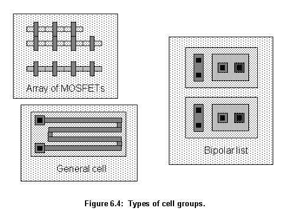
Before describing the actual algorithm implementation, some steps should be defined because they are closely related to the system being optimized. There are four main points to be defined: encoding, genetic operations, evaluation and classification.
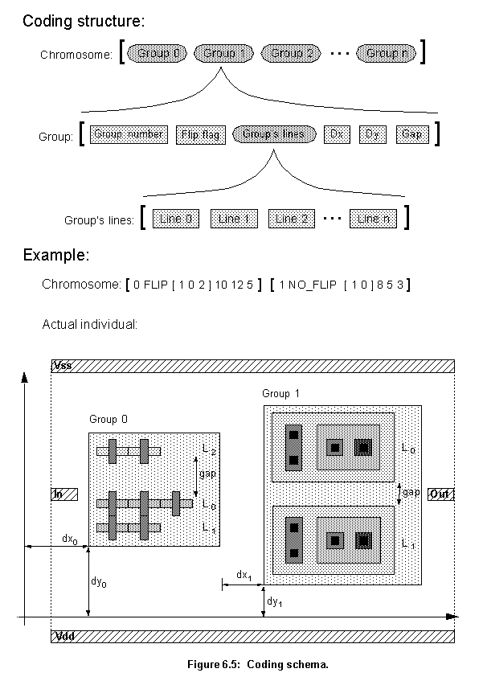
The chromosome is not represented by a string, as would be expected, but by a list. This is done to avoid Hamming cliffs and to enhance robustness. As the top of figure 6.5 shows, the elements of this list represent each group being laid out in the cell, with the groups laid out in the same order as they appear in the list. For each group there is another list describing how that particular group will be laid out. This list has the following elements:
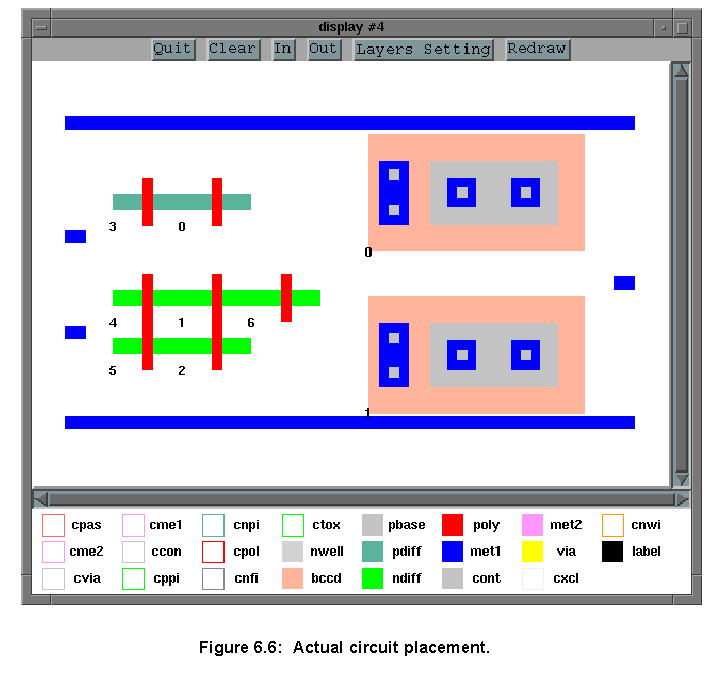
As figure 6.7 shows, when two individuals mate, their genetic material mix, in this case the list containing placement information for each group. A parent is chosen randomly to be the main parent, the order of the groups in its chromosome will determine the order in the offspring chromosome. In figure 6.7, parent 1 was chosen as the main parent, the order of groups in the offspring reassembles its own, but the actual group's placement information came randomly from both parents. Indeed, in this particular example, only group 3 came from parent 1.
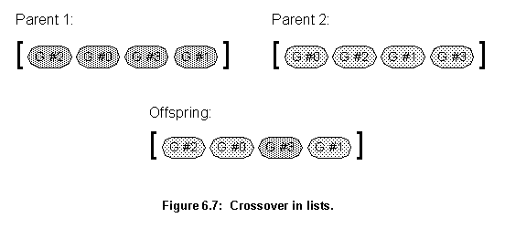
After an offspring is generated, swap and mutation operations can be applied. At the top level, mutation can be used to swap the position of some groups in the offspring. Inside each group description, cross-over and mutation can happen. The FLIP flag can be changed by mutation and the group's lines can be swapped. The distances Dx, Dy and gap can be swapped among the groups or just changed.
Cross-over and mutation operations can generate illegal individuals. Illegal meaning placements that violate design rules. When evaluated they will be classified as "born dead" individuals and will not be added to the population list. It is not possible, at the mating stage, to detect all "born dead" configurations, however the ones that produce out of boundaries placement of cells can be detected and corrected.
To correct them, the program calculates the length of all cells and subtracts it from the length of the available area for placement. This gives the available free space between cells. This space is then divided by the number of cells plus one, which gives the average separation in between the cells and from them to the border of the placement area. The routine then calculates the space left between the last placed cell in the offspring and the border of the available area. If this value is negative it means that the cells are overflowing the available area. If this value is too big, it means that all cells are crowded in one end of the available space (fig. 6.8).
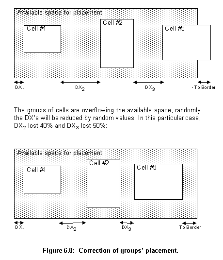
Figure 6.8 shows what the program does to correct the placement. The routine randomly chooses one of the group of cells, then, using the average separation calculated before as a base value, it randomly takes a percentage of the base value and subtracts or adds (depending if the cell is overflowing or crowded) this value to the group's Dx (at maximum adding or subtracting 50% of Dx). It repeats this operation until the space left between the last cell and the available area is neither negative nor too big.
The same operations are repeated for the Dy and Gap distances, the only differences being that these operations have to be undertaken for each group of cells and the distance to be adjusted is the distance from the top of the cell and the top of the available placement area. In this case Dy and Gap are altered until the cell fits in the space.
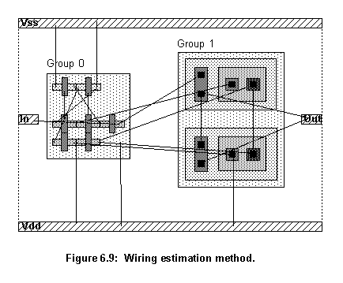
To get a similar effect, the evaluation routine uses the same wiring algorithms, that the router uses, but it allows crossing over and short circuits to take place and it does not test for design rule violations. All connections are carried out with the smallest wire possible, changes of layer, however, are undertaken whenever necessary.
As the evaluation pseudo routing takes place, the cost of the wires is being computed. The routine that calculates the cost of each wire is the same that is used by the router. The number of crossings of each new wire with all the old ones, already laid out, is accumulated. At the end, the evaluation routine has the total cost of the pseudo routing and the total number of crossings. Each placement will be judged by these two values.
As discussed in chapter 5, the offspring produced by genetic manipulation (the next population to be evaluated) could either replace the whole population (generational approach) or just its less fitted members (steady-state approach). The steady-state approach was implemented here, because the processing time to evaluate each individual is high, which leads to the use of a relatively small population. The program could not afford to kill all individuals from one generation to the next. New individuals are then continuously appended to the population list. When the population reaches a predetermined maximum number, half of it is killed.
The fitness of an individual, and thus its position in the population list, determines its probability of reproduction and death. As figure 6.10 shows, as the position of an individual in the population list increases, its probability of reproduction decreases and its probability of death increases. Both probabilities depend solely on the individual's position in the list, not on its actual fitness value. The two probabilities vary following the normal distribution. To generate the random numbers in such a distribution, the output of a function that generates random numbers between 0 and 1 with equal probability (r) is used as an argument for the erf function:
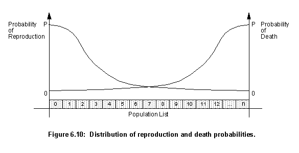
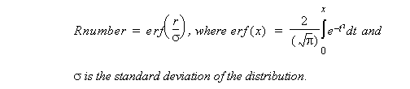To find an individual for reproduction or death:
Indreproduction= round((1-Rnumber)*Total), Inddeath= round(Rnumber*Total).The normal distribution was chosen because it is the distribution used by nature. Whenever individuals are chosen to reproduce or die one of these two probabilities is always used. It means that an unfit individual can reproduce and a fit one can die, but these events have a very small probability of taking place.
As stated earlier, the inputs for the Eval agent are an empty design and a list holding the groups of cells to be placed. When this agent is created it generates four individuals by placing then randomly. These individuals are then evaluated and classified and become the population.
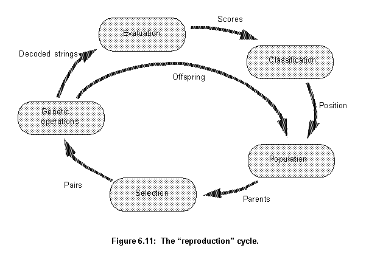
The Cont agent can use the Eval agent's method run to run a certain number of generations. This cycle (fig. 6.11) is very similar to the one described in figure 5.2. The main difference is the classification stage. This new cycle takes into account the position of an individual in the population list which determines its probability of reproducing or dying, not its actual fitness value. This is similar to nature: fitness only gives a better chance of survival, it does not guarantee it. The stages depicted in figure 6.11 are:
run.All the communication and resource management of the Router servers is undertaken by the RouterComm object (fig. 6.12). When it receives a design to route the object tries to find a free Router server. If there is none it requests a new one from the Broker agent server. When a Router server is available, the RouterComm object sends the placed design to it. In each cycle, the RouterComm checks if any Router server has already finished its wiring. If one has and the routing was successful, the completed design is returned to the client and the Placer server stops. If the routing failed, this Router server is marked free and can be used for wiring another design.
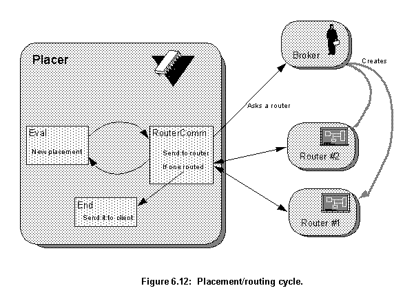
If the RouterComm object doesn't have any free Router servers available and the Broker server refuses to give it a new one, the program stops until a Router becomes available.
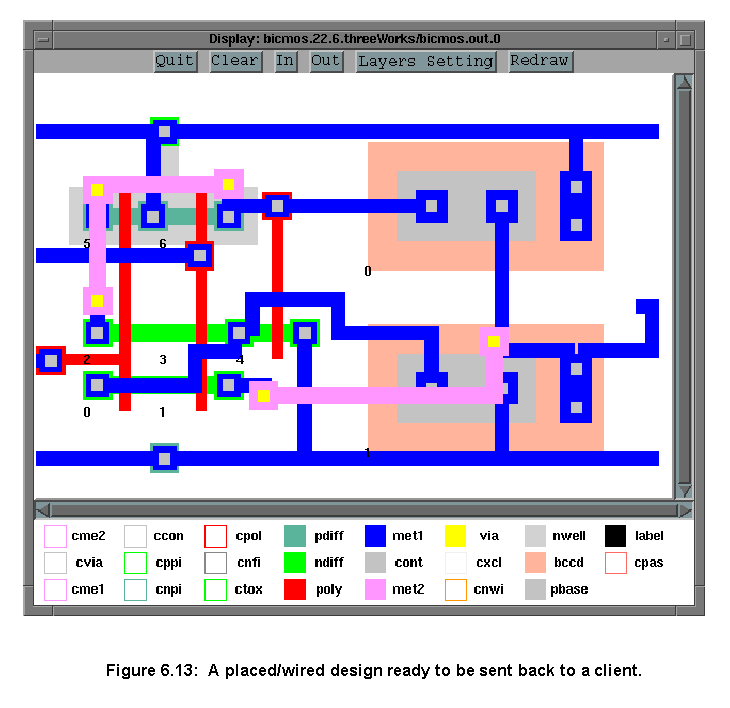
The Placer server finishes, when a design is successfully routed, an error condition occurs or if it has been trying to route for a number of generations unsuccessfully. Figure 6.13 shows a placed/wired design ready to be returned to a client application by the server. If successful the server returns the placed/wired circuit:
If it fails it returns the statement:(edifshiftreg.cir(design shiftreg...))
(list sorry)
In both cases the server stops and waits for further commands from the client application.
Next
Contents
Talk to me